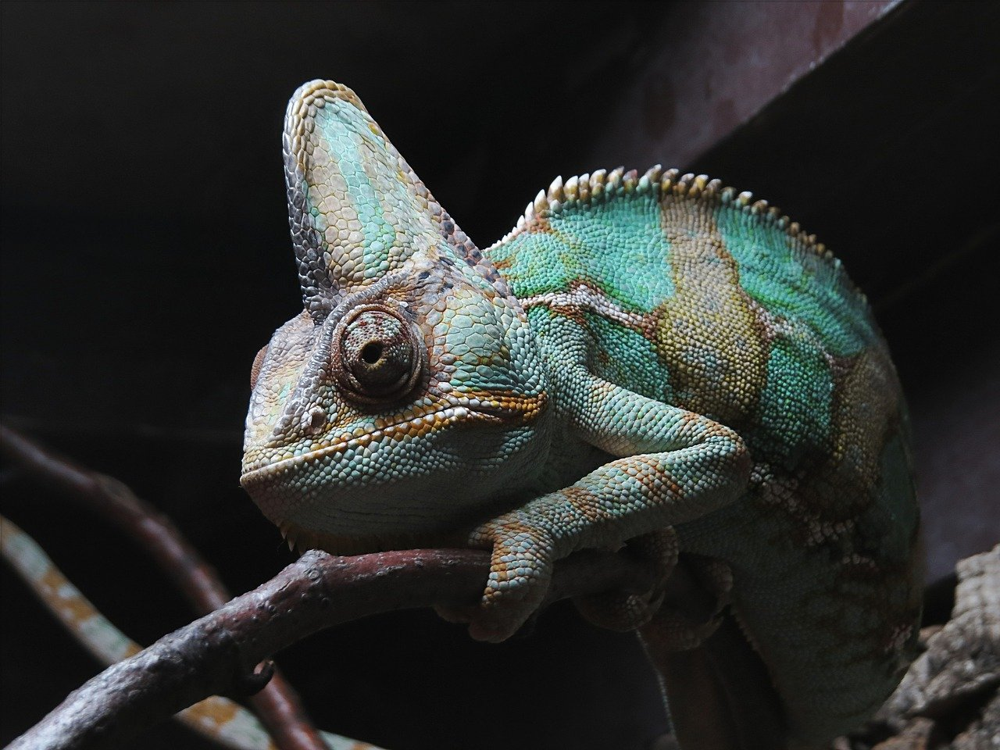

課題1 pictureタグでの画像表示わけ
スクリーン幅768pxを境に画像が切り替わります。

課題2 imgタグの縦横比固定表示
アスペクト比の異なる画像を全て16:9で表示します。
課題3 【JS】MediaQueryListによるメディアクエリの取得
スクリーン幅768pxを境にテキストが切り替わります。
課題4 モーダルウィンドウの実装（可能な限りCSSのみ)
ボタンをクリックするとモーダルウィンドウが表示されます。
モーダルです。（ドーン）
課題5 InterSectionObserver
透明な要素が、ウインドウ下端から30%上の位置に到達したときに、姿を現します。

じゃーん。